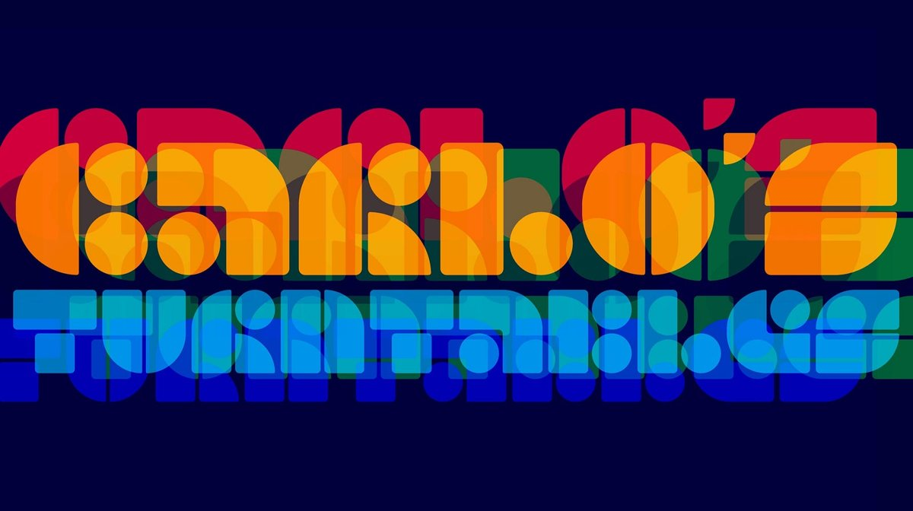

Strictly vinyl. 4+ hour sets of spiritual jazz, nu-jazz, electronic music, house and world music. No beat matching. Just pure music.
- 39 dates
- 12 venues
- 2,000+ records
- since 2022
About
Selectazzz is Carlo De Marchis behind the turntables, the selector activity he has played out as Carlo's Turntables since October 2022. Every set comes from his collection of more than 2,000 records and runs four hours or more.
Each set is selected in advance to fit in one UDG bag, so it can hold more than one track from the same record. It is put together to be played on a Mastersounds Radius Two Valve mixer, and tracks from the same record never follow each other.
It is the opposite of his work in AI and generative AI: a completely manual selection that starts from physical records. Most of the nights are in Torino, and in May 2024 he played an all-vinyl selector set at Studio151, a listening bar in Alphabet City, New York.
Records come from Militant Sound, Torino · Sounds of the Universe, London · Phonica, London · Kagoshima, Napoli · Serendeepity, Milano

Dates
39 sets · each links to its sourceMost played
- Vermoutheria Pelitis14
- Ailime'7
- 100 Vini & Affini, Green Pea2
- Affini2
20261 date
20251 date
202415 dates
- 28 OctVermoutheria PelitisMurazzi, Torino
- 25 SepPrivate event, LIFTTItalian Tech Week, Torino
- 21 SepEmmestudio openingDocks Dora, Torino
- 19 SepPrivate event, Casa delle LampadineTorino
- 16 SepVermoutheria PelitisMurazzi, Torino
- 15 JunVermoutheria PelitisMurazzi, Torino
- 29 MayStudio151All-vinyl selector set at a listening barAlphabet City, New York
- 11 MayVermoutheria PelitisMurazzi, Torino
- 21 AprArt opening, Laura Milani
- 20 AprVermoutheria PelitisMurazzi, Torino
- 16 MarVermoutheria PelitisMurazzi, Torino
- 28 FebAffiniSan Salvario, Torino
- 17 FebVermoutheria PelitisMurazzi, Torino
- 10 FebVermoutheria PelitisMurazzi, Torino
- 7 FebAffiniSan Salvario, Torino
202319 dates
- 31 DecPrivate partyTorino
- 27 DecPrivate partySan Salvario, Torino
- 22 DecVermoutheria PelitisMurazzi, Torino
- 16 DecVermoutheria PelitisMurazzi, Torino
- 12 DecVermoutheria PelitisMurazzi, Torino
- 25 NovVermoutheria PelitisMurazzi, Torino
- 17 NovFaber meeting, Toolbox CoworkingTorino
- 11 NovVermoutheria PelitisMurazzi, Torino
- 13 OctVermoutheria PelitisMurazzi, Torino
- 5 Oct100 Vini & Affini, Green Pea100 ViniliTorino
- 14 JulLumen GourmetOpen air
- 12 MayAilime'Torino
- 14 Apr100 Vini & Affini, Green Pea100 ViniliTorino
- 13 AprAilime'Torino
- 18 MarPrivate open-air party
- 11 MarOffTopicDJ set and brunchTorino
- 9 MarAilime'Torino
- 26 JanAilime'Torino
- —Private open-air party
20223 dates
Photos